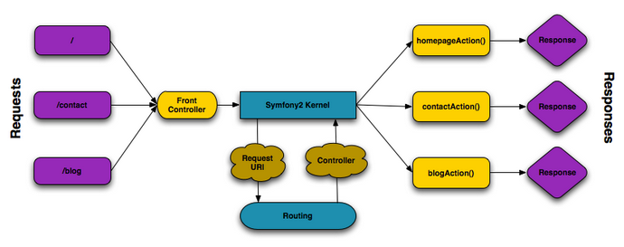
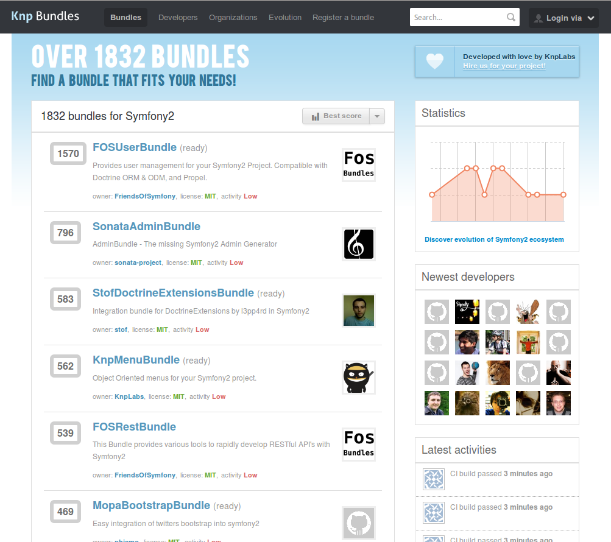

Symfony2@facile.it
Introduzione a Symfony2

| Version | Release date | PHP version | End of maintenance | Notes |
|---|---|---|---|---|
| 1.0 | January 2007 | >= 5.0 | January 2010 | |
| 1.1 | June 2008 | >= 5.1 | June 2009 | security-related patches were applied until June 2010 |
| Version | Release date | PHP version | End of maintenance | Notes |
|---|---|---|---|---|
| 1.2 | December 2008 | >= 5.2 | November 2009 | |
| 1.3 | November 2009 | >= 5.2.4 | November 2010 | |
| 1.4 | November 2009 | >= 5.2.4 | November 2012 | LTS version. 1.4 is identical to 1.3, but does not support the 1.3 deprecated features. |
| Version | Release date | PHP version | End of maintenance | Notes |
|---|---|---|---|---|
| 2.0 | July 2011 | >= 5.3.2 | ||
| 2.1 | September 2012 | >= 5.3.3 | More components are part of the stable API. |
| Version | Release date | PHP version | End of maintenance | Notes |
|---|---|---|---|---|
| 2.2 | February 2013 | November 2013 | will be released at the end of February 2013; | |
| 2.3 | May 2013 | May 2016 | (the first LTS) will be released at the end of May 2013; |
un framework php > 5.3.3
MVC? NO
Request/Response
costruito sulla specifica HTTP
Il viaggio dalla request alla response

un insieme di componenti (quasi) disaccoppiati
Zend Framework 2 ha la stessa impostazione
i componenti sono i mattoncini base di Symfony2, creano uno strato sopra il php, per astrarre compiti comuni ma complicati se eseguiti in php puro.
Sono testati, sicuri e open source
come gestire tutti questi pacchetti e librerie?
e gli aggiornamenti?
e le dipendenze?
composer
Per usare i componenti di Symfony non serve usare tutto il framework
è semplice codice php
serve solo un autoloader PSR-*
con composer è tutto più semplice
Filesystem
Gestione filesystem
use Symfony\Component\Filesystem\Filesystem;
use Symfony\Component\Filesystem\Exception\IOException;
$fs = new Filesystem();
try {
$fs->mkdir('/tmp/random/dir/' . mt_rand());
} catch (IOException $e) {
echo "An error occurred while creating your directory";
}
// this directory exists, return true
$fs->exists('/tmp/photos');
// works only if image-ICC has been modified after image.jpg
$fs->copy('image-ICC.jpg', 'image.jpg');
// image.jpg will be overridden
$fs->copy('image-ICC.jpg', 'image.jpg', true);Process
Eseguire comandi come sub-process
use Symfony\Component\Process\Process;
$process = new Process('ls -lsa');
$process->setTimeout(3600);
$process->run();
if (!$process->isSuccessful()) {
throw new \RuntimeException($process->getErrorOutput());
}
print $process->getOutput();
Event Dispatcher
gestione di eventi (emitter, listenter e subscriber) dove non si può usare l'OO
ridistribuzione di codice, plugin systems
use Symfony\Component\EventDispatcher\EventDispatcher;
$dispatcher = new EventDispatcher();
$listener = new AcmeListener();
$dispatcher->addListener('foo.action', array($listener, 'onFooAction'));
// closures
$dispatcher->addListener('foo.action', function (Event $event) {
// will be executed when the foo.action event is dispatched
});
// create the FilterOrderEvent and dispatch it
$event = new FilterOrderEvent($order);
$dispatcher->dispatch(StoreEvents::STORE_ORDER, $event);
Dom Crawler/CssSelector
crawler di documenti HTML, OO style (spider?)
<?php
$crawler = new Symfony\Component\DomCrawler\Crawler($html);
// xpath filter
$crawler = $crawler->filterXPath('descendant-or-self::body/p');
// css selector, alla jquery
$crawler = $crawler->filter('body > p');
$crawler = $crawler->filter('body > p')->reduce(function ($node, $i) {
// filter even nodes
return ($i % 2) == 0;
});
// fluent interface
$crawler->filter('body > p')->eq(0);
$crawler->filter('body > p')->first();
$crawler->filter('body > p')->last();
$crawler->filter('body > p')->siblings();
$crawler->filter('body > p')->nextAll();
$crawler->filter('body > p')->previousAll();
$crawler->filter('body')->children();
$crawler->filter('body > p')->parents();
// form
$form = $crawler->selectButton('validate')->form(array(
'name' => 'Ryan',
));
// settare valori sul form
$form->setValues(array(
'registration[username]' => 'symfonyfan',
'registration[terms]' => 1,
));
// get back an array of values - in the "flat" array like above
$values = $form->getValues();
// returns the values like PHP would see them,
// where "registration" is its own array
$values = $form->getPhpValues();
Console
Scrivere comandi per console in php
gestione di task per cron, manutenzioni al db etc
class GreetCommand extends Command
{
protected function configure()
{
$this
->setName('demo:greet')
->setDescription('Greet someone')
->addArgument(
'name',
InputArgument::OPTIONAL,
'Who do you want to greet?'
)
->addOption(
'yell',
null,
InputOption::VALUE_NONE,
'If set, the task will yell in uppercase letters'
)
;
}
protected function execute(InputInterface $input, OutputInterface $output)
{
$name = $input->getArgument('name');
if ($name) {
$text = 'Hello '.$name;
} else {
$text = 'Hello';
}
if ($input->getOption('yell')) {
$text = strtoupper($text);
}
$output->writeln($text);
}
}#!/usr/bin/env php
# app/console
<?php
use Acme\DemoBundle\Command\GreetCommand;
use Symfony\Component\Console\Application;
$application = new Application();
$application->add(new GreetCommand);
$application->run();
$ php console.php demo:greet Facile
Hello Facile
Console di Symfony2

come si utilizzano?
$ mkdir project
$ cd project
$ composer require symfony/filesystem 2.1.*composer crea la cartella vendor, scarica le dipendenze e crea un autoloader
include __DIR__.'/vendor/autoload.php';
use Symfony\Component\Filesystem\Filesystem;
$fs = new Filesystem();
$fs->mkdir('watta!');altri componenti
- HttpFoundation -- il protocollo http object oriented
- DependencyInjection -- creazione di service container
- Finder -- ricercare file sul filesystem
- ClassLoader -- autoloader universale
- Config -- definire file di configurazione e validarla
- Routing -- mappa una richiesta http a un set di variabili di configurazione
- HttpKernel -- struttura per convertire una Request in una Response, base per full stack framework
- Security -- sistema di sicurezza completo (anche troppo)
ma Symfony?

- app configurazione generale dell'app
- src tutto il nostro codice
- vendor tutte le librerie/bundle non nostri che utilizziamo (non toccare!)
- web cartella pubblica (vhost) con front controllers e assets
una request symfony
# app/config/routing.yml
contact:
pattern: /contact
defaults: { _controller: FacileCmsBundle:Main:spider }class MainController
{
public function spiderAction()
{
return new Response('Spider!');
}
}Al di sopra dei componenti ci sono i Bundle
Ogni cosa è un bundle in Symfony2.
Symfony2 stesso in realtà è un bundle sviluppato da Sensio Labs che si chiama FrameworkBundle
creare un sito in Symfony2 == creare un bundle
knpbundles.com
i bundle più conosciti
SonataAdminBundle
backend generator
gestione dei backend tramite classi php, i form di symfony e il container
CRUD, tutto è customizzabile (pagando)
FOSUserBundle
gestione utente / login
form login, recupero password, conferma
AsseticBundle
gestione degli assets
in sviluppo compila on-the-fly js e css
supporta filtri come sass, compass, less, coffeescript, closures, cssrewrite
uglifyjs, minify dei file in prod, con dump su filesystem
sul server di produzione, un solo file per css e uno solo file per javascript, minificati
senza fare nulla 8)
SerializerBundle
serializzazione di oggetti (api, web serivices)
{{ articoli|serialize|raw }}
{{ articoli|serialize('xml') }}un template in twig, per renderizzare un file json
[
{% for articolo in articoli %}
{{ articolo|serialize|raw }}{{ loop.last ? '' : ','}}
{% else %}
{ "response": "non ci sono articoli" }
{% endfor %}
]JMSI18nRoutingBundle
routing multilingua
rotte tradotte, con o senza prefisso
/it/articoli -> /en/articles
/articoli -> /en/articles
/articoli -> /articleszero configurazione
KnpMenuBundle
gestione di menu ad oggetti
LiipImagineBundle
gestione delle immagini
basato sulla libreria Imagine
gestisce il ridimensionamento e la generazione di thumbs con un interfaccia ad oggetti
in più permette di aggiungere ombre, skew, riflessioni...
usa imagemagick, gd2 o Gmagick con la stessa interfaccia
generazione a runtime delle thumbs, cache automatico
LiipFunctionalTestBundle
test funzionali
TDD!
symfony è completamente integrato con phpunit
non ci sono scuse per non fare test unitari e funzionali